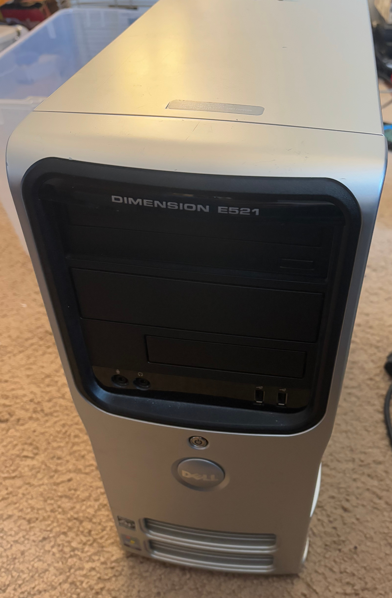
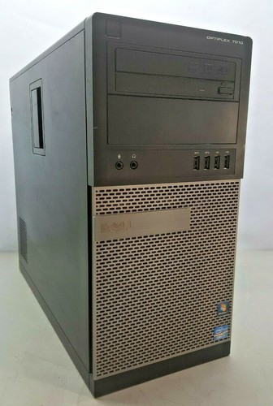
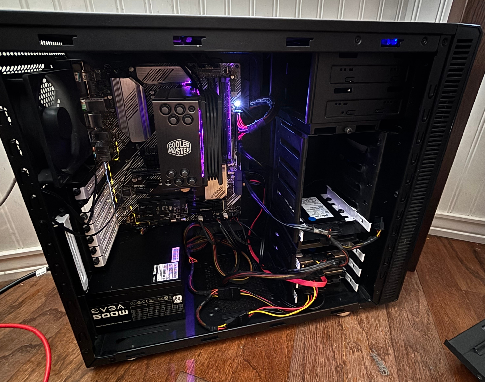
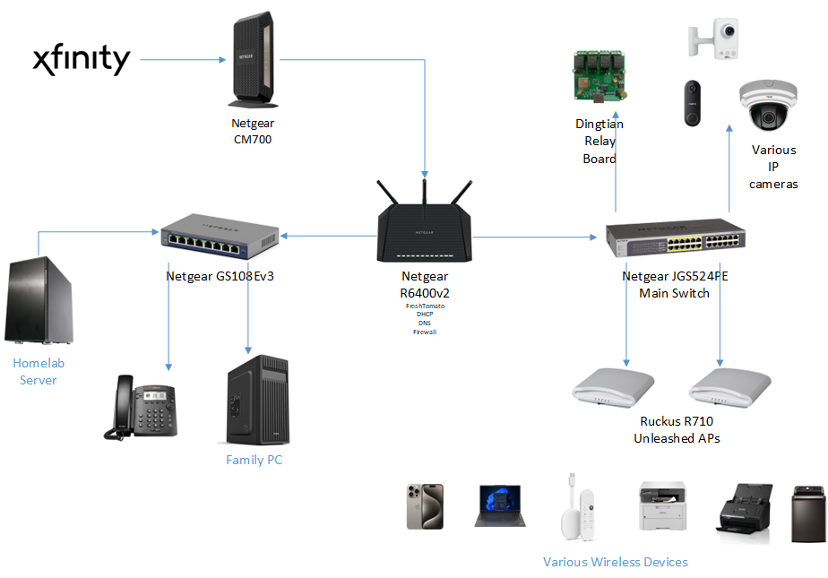

I wanted to post this article after my hiatus, as it has been in the works for some time now. The purpose of this post is to discuss the current state of my homelab and home network, as well as the progress I have made over the years. Maybe this will help inspire some of y’all to build or update your own networks, or possibly just serve as an enjoyable read for others.
The Server
Likely the most important thing in a homelab is the server(s) themselves. Mine have gone through a variety of changes over the years, so let’s see where it all started.
History
I have always had an interest in computers, and over time, I fell into the world of networking. It started with connecting a couple of computers with an Ethernet cable and playing around with static IPs and file shares. It wasn’t long before I started playing around with an old Lenovo ThinkCentre, and before I knew it, I had a homelab. I primarily used the ThinkCentre for attempted remote video rendering for my channel, so I found another PC for the homelab. An old Dell Dimension E521:

This sucker had one gigabyte of DDR2 memory, an old 160gb hard drive (replaced by a larger 1tb drive), and, most importantly, two cores at 2.0ghz, with 64-bit power from AMD. At this time, most of my old early-2000s-era machines wouldn’t run any modern 64-bit OSes, so having this Athlon 64 was important.
I had started my deep dive into homelabs with plain old Windows Media Player. With some experimentation, I had learned that I could share my video library over DLNA with the built-in video player. Many early 2010s smart TVs and Blu-ray players could detect these servers, so I had discovered my very first implementation of a self-hosted video platform! So here I am with this old Dell running Windows 7, ripping DVDs with Handbrake, and watching them on TVs and computers throughout the house.
Eventually, I want to add more features, such as better organization and auto album covers. What do I discover? Plex? Jellyfin? No, something called Mezzmo. This was a Windows-based media streamer freemium software that outshone the built-in Windows Media Player. I recall being able to get metadata downloads and automatic organization. The biggest addition of it all was that it included a web interface.
I ran some other programs like XAMPP, built my first self-hosted website, and did a few other things. Later, I tried Plex, but did not like the half-cloud model of it (and have since never used it). I wanted to use Jellyfin, but it did not meet the minimum requirements when using the Windows version. This pushed me to make the big switch. Around 2020, I installed a headless Ubuntu server 18.04. (Actually, it was like 12.04 cause of some issue, then I updated to 16.04, then to 18.04, very convoluted).
I learned many of my current Linux skills on that very machine, but running something so low spec could not last for long. I am actually impressed with how much I had running on that computer from 2007. Many slow response times and a hard drive failure later, I upgraded.

In the spring of 2021, I got this off of eBay. A Dell Optiplex 7010. This had a quad-core hyper-threaded i7-3700 and 16gb of DDR3, the most of any computer in our house so far, surprisingly. Along with it, I obtained another 1TB drive, and I had decided to upgrade to a Crucial SSD for the boot drive (eventually replaced with the Samsung from the old SSD video!). Unfortunately, that one-terabyte drive had no redundancy, nor did the boot drive. But hey, at least there’s a huge performance increase! 😬
Regardless of safety measures, this machine worked faithfully for years. In that time, I moved from bare metal Ubuntu Server to Proxmox, installed dozens of different Dockerized apps, but barely performed any hardware updates.
Just a few of the notable things I learned/changed during this time include:
- Using Proxmox as a hypervisor and running Windows alongside Ubuntu
- Using Docker to run multiple programs without dependency issues
- Configuring SSO
- Using Duplicati for backups
- Switching from Apache to Nginx
- Learning and using Grafana
- Setting up Nextcloud
- Getting into video processing for surveillance and transcoding
- Hosting for people outside of my immediate family
- Utilizing Cloudflare as a reverse proxy
Today
In the summer after finishing school, I decided to get myself a little graduation gift. Rather than fully focusing on classes that year (senioritis), I kept my eye on a line of HP Z series workstations. I was certain that one of these was the primary candidate for hosting all my fun things. While I had also looked at tower-sized PowerEdge systems and Lenovo workstations, I kept a few things in mind throughout my search.
Firstly, these would need to be a desktop tower size in order to fit into the corner where my current machine is, and also to support my second requirement: noise. I needed this machine to be as quiet as possible, as it is in our family room, and the family in that room wouldn’t appreciate the whine of fans. Fanless is too expensive & often has underpowered hardware, so quiet fans are just fine, making a desktop is perfect in this case. The server would need lots of drives or availability for them, so a motherboard or HBA with lots of SATA or SCSI ports and a case with a ton of 3.5” bays.
I was not sure which of these workstations had a bearable noise level, not to mention lower power usage. I had resorted to watching YouTube videos of BIOS configurations and such to get an idea of the loudness. Eventually, I gave up on this and decided my solution would be to go with a custom build. This brings me to what I have today!

- Motherboard: Asus Prime B550-Plus
- CPU: Ryzen 9 5900x
- Memory: 2x32gb Samsung M391A4G43mb1-ctdq Unbuffered ECC DDR4
- GPU: EVGA GTX 750 Ti
- Storage:
- 2x KIOXIA XG8 Series KXG80ZNV512G (NVMe boot drives, RAID 1)
- 2x Micron mtfddak960tdc 960gb SATA (Fast storage, RAID 1)
- 2x HGST WD Ultrastar HUH721212ALE601 12tb (Large storage, RAID 1)
- Case: Fractal Design Define R4 ATX Mid Tower Case
- PSU: Some EVGA 450 B1 450 W I found in my closet
- CPU Fan: Cooler Master Hyper 212 RGB Black Edition, I also found it in my closet
Starting with the motherboard, I chose Asus because I have had a good experience with previous builds. Also, a used B550 motherboard supports unbuffered ECC memory and has a half-dozen SATA ports. My other requirements for a motherboard included the ability for PCIe expansion, some NVMe slots for my boot drive, and hardware RAID support, though I knew I was going to use ZFS through Proxmox.
The CPU is a solid performer without breaking the bank, especially on the used market. I wanted plenty of cores for virtualization and a fast single-core speed for those various single-threaded programs. Additionally, though this thing does kick out a lot of heat, I knew it did better than Intel (in most cases). This also allowed me to use my old CPU cooler from my main PC, a Cooler Master Hyper 212, even though the RGB wasn’t necessary. Many warned against this cooler, stating that it would not be enough for this 12-core CPU. However, I previously used the Hyper 212 with my 10700k, which worked great, even while there were many more complaints about it! And guess what? It has worked just fine on the server.
The memory was an interesting pick. I found some decently rare, unbuffered ECC memory. This can be used in desktop boards as long as they support ECC. Fortunately for me, many of AMD’s modern chipsets allow for this configuration. I found two 32gb Samsung sticks on eBay for a pretty steal of a price, and since I have been looking for a matching pair that won’t bankrupt me (RIP with ram prices now). This gives me a nice 64gb of ECC DDR4 to work with (though 2666 MHz, oh well). The ECC could come in handy for using ZFS to make redundant arrays.
Speaking of disks, my big, primary storage is two HGST/WD 12tb drives put into a RAID 1 array. Though I plan to add more eventually and get a WD Purple disk strictly for surveillance, I hit a roadblock. The B500-Plus has 6 sata ports, as I mentioned earlier, two of those are disabled while using the PCIe lanes for NVMe storage. So I am down to 4 with my two RAID 1 boot SSDs. If I ever plan to upgrade, I suppose I must find an HBA. For now, alongside the 12tb storage disks, I have two 1tb Micron SATA SSDs in a, you guessed it, RAID 1 array. Yes, I promise I know other configurations exist, but the budget just limits me, and I wanted SSD storage. For now, I call the SSD storage Fast1, and the HDD Storage12, while the boot drive I usually name ssdstorage in my VMs.
Last interesting thing here, the case! This thing is pretty awesome, but not too flashy. Fractal Design made this in the early 2010s, and it shows with the front hot swaps and swinging panel. I chose this as it has plenty of drive bays, lots of room for cable management, and good soundproofing. Not to mention, I copped it for something like 40 bucks. Other than that, the PSU is nothing special (and it probably should be) while the GPU is there because of the lack of onboard graphics.
The network
Even if the server is the heart of my homelab, the network has to be my favorite. Coming a long way from a single ISP modem/router, I now have a diverse yet compact home network.

Let’s start from the “demarc” where Xfinity provides a coaxial connection to the internet. This comes into the laundry room, where the heart of the network is, mounted on the wall here. I have a Netgear CM700 Modem, giving me an Ethernet WAN connection. Xfinity provides 400mbps down and around 40mbps up, which is actually leagues better than previous years. Around the start of my homelab, we only had 5mbps for uploads, which brought hosting services to the stone age when it came to external connections.
This connection comes into my main firewall/router, a Netgear R6400v2 running Fresh Tomato. Apart from being the NAT point for my connection, this also serves IP addresses, DNS, and forwards traffic. This is the basic home router you would probably think of, and I am planning to upgrade to a pfSense box at some point or another. For now, it has worked great and has over a year of uptime.
Next, I have a couple of switches also by Netgear. It’s here I want to point out that I am not intentionally a huge fan of Netgear, yet their products fit my needs nicely. These switches and routers can be configured from simple web UIs when I do not feel like using a CLI, and they’re rather inexpensive. Netgear provides “advanced technology” at least compared to the modern home network equipment, such as POE, VLANs, STP, you name it. As for products like Ubiquiti, they’re expensive and are amazing in their ecosystem, but are very sought after and pricy even in the used market.
~~Anyway, back to the network setup. One switch is the primary one, a JGS524PE, which provides gigabit connections around the house and POE to my cameras and APs. The other is a GS108, which is a simple gig switch that connects devices in the office/family room, including the server. I have a third small POE switch in the garage that looks like the GS108 for cameras, but I have not used it yet. ~~
UPDATE: As I was writing this, I made some big changes to my main network devices: I got a new primary switch and switched to using OPNsense on a mini PC. This started as my old Netgear JGS524PE had died after a reboot and a factory reset, which seemed to have occurred for many others. I used a simple, 8-port, Netgear PoE switch as a stand-in as I searched for a replacement. I will document this process of finding a replacement and my new setup in a future blog post!
For my new switch, I ended up settling for a Cisco Small Business switch, the SG250-50HP. This gigabit, 50-port smart switch with PoE gave me all I needed for my network for about $50 eBay. I particularly liked the fact that the SG250 could allow me to jump into layer 3 switching. 50 ports of gigabit speed PoE is more than I’ll ever need (at least in quantity) for basic devices around the house. Though this thing was much larger than my old Netgear switch, it fit fine in the space provided on the wall. Despite having more fans and being an overall beefier switch, it wasn’t much louder than its predecessor.
Previously, I had been planning to install an OPNSense box using an old Gigabyte mini-PC. This was my time to pull the trigger. With a layer 3 switch and necessary advanced network configuration, I decided to install the GB-BXBT 2807 as a router on a stick, as there is only one Ethernet port on this thing. That was a mistake. This will be a focus for a future post, but long story short, my ISP hated having a switch between the modem and my WAN interface, and constant crashes with the Realtek driver made me add a Mini PCIe Ethernet card. I replaced the unnecessary WiFi card with an Intel Mini PCIe adapter from 10Gtek. I actually could not fit the SSD in the case with this installed, so I desoldered the pin header for the Ethernet, soldered some CAT6 directly to the board, drilled a hole in the case, and terminated the other end. It ended up working great, pulling the full 400 mbps from Xfinity. Additionally, I ended up installing the Realtek driver from the OPNsense extensions, as the FreeBSD one is garbage.
For Wireless we have two Ruckus R710 access points at different ends of the house. These are running the unleashed firmware and have been solid for media streaming, gaming, and general use. It also supports various IOT devices. Another notable thing is a relay board I connected to MQTT for Home Assistant to control the old doorbell ringer and use door sensors and such.
The software
Lastly, we come to what I run in my lab 24/7. Here is a basic diagram of the software running on my server. Everything is solely on this single machine (apart from a second homelab in a lake house, but maybe that’s for another post!). I run good old Proxmox on my server with ZFS pools for storage. I have 4 VMs you can see in the diagram below:
Hmm, well this is embarrassing, I will add the diagram soon… hopefully If it’s like months later and I haven’t, please reach out to me. I wanted to get this published, and thought a diagram can be a later project.
Ubuntu Container Server
The first VM is the most important. This Ubuntu instance is the heart of my services, with 58 different Docker containers actively running. I like Dockerizing my applications to allow for different dependencies not to affect each other. It also allows for the separation of networks and volumes between the services.
####I have many apps running, so let’s look at some of the fundamentals:
Authentik
I list this one first because it is one of my most connected apps, other than my reverse proxy. Authentik is an SSO service that allows for web logins and multiple AAA services, such as OAuth and LDAP, for many of my services, such as Nextcloud and Jellyfin. This helps me minimize the number of users I must create when someone else would like to use a service. Additionally, many of the applications allow for group and profile information to be updated from the SSO.
NginxProxyManager
Forwarding all the traffic from my different applications, NginxProxyManager has dozens of hosts defined, allowing them to be served on a single port. This handles my TLS certificate renewal (though Cloudflare provides public-facing ones automatically), making creation of secured web apps a breeze through wildcard certs. I had thought about using Traefik, and maybe I will in the future, but NPM has been very solid, easy to use, and has all that I really need.
Honorable Mentions
Databases and tools for various things
- PostgreSQL - various app support, haven’t used it myself much
- MariaDB - anything Maria or MySQL
- Redis - apps that require cache
- Adminer - for some of my various DBs, supports many
- PhpMyAdmin - an old favorite, easy and simple GUI
Others
- Portainer - it’s been great and simple!
- Postfix SMTP relay - rather than messing with Gmail settings, I just set it once with this
- Librespeed - I cannot tell you how much I like local speed tests, get true LAN speeds!
- Various IP updators - Cloudflare and others get their DNS records updated if my IP were to ever change (has not automatically yet, fortunately)
- Guacamole - great web access for SSH, RDP, VNC, or anything else when I don’t have a terminal set up (also works great with Authentik!)
- Grafana - just getting started with this, seems like a big project, but I like the integrations
- Codeproject AI - for Surveillance analysis
####Now, of course, here are the useful or entertaining apps that supplement my tech life:
Jellyfin
One of my first apps, as I mentioned before, was a media server. Jellyfin has been a great part of my homelab for years and has had improving development and stability with time. It works great with my “arr” apps as well as my Authentik directory. I really like the advancements I have seen with this piece of software over time and will continue to follow its development.
Nextcloud
A big part of my self-hosted life. I have accumulated many files, calendar events, and notes on my account throughout the years. This has been a really useful alternative to Google Drive to allow me to support my school life through document syncing, note-taking, and calendar organization. I have been able to integrate the users and groups with Authentik with OpenID and share photos with my entire family.
Others
- CalibreWeb - supports my e-reading, especially through KOReader on a rooted Kindle
- Wallabag - Works great with the browser extension, allowing me to read articles later
- FreshRSS - Don’t really use anymore, but was an early addition to my homelab
- Paperless - Stores scanned documents, use in conjunction with scanservjs to allow for a fully web-based sheet feeder document solution for my Epson FastFoto
Windows 11 VM
This VM is primarily a surveillance server for running Blue Iris. There isn’t much else going on here. Blue Iris has been a pretty solid VMS, just with a few various downsides, one of which is that it must run on Windows.
Windows Server VM
I started using a Windows Server 2025 VM to start working with Active Directory and different Windows server functions to sharpen my skills.
Home Assistant
My final VM to mention is my Hass.io (I think they dropped that name, actually) virtual machine. I decided against running Home Assistant in a container, as I wanted easy installation and management of useful addons that mainly work on Home Assistant OS. I don’t have too many integrations yet, but I plan to steadily add more sensors as I integrate Zigbee into my setup.
Here are a few of the cool things I do with HA:
- Use a Zigbee PoE adapter to easily communicate with simple Zigbee sensors
- Use mobile device WiFi networks to set home/away automations
- Use Google Cast to show CCTV cameras on devices
- Use ha-sip to make VoIP calls and control automations using SIP
This was the bulk of my current homelab, but it is expected to change! I plan to update this post a bit, mostly by revising it, and will do so throughout 2026. Past that point, I’ll keep it as an archive and possibly make a new one, summarizing all the new changes. This is all dependent on how busy I am during this time. Regardless, I hope you enjoyed reading this and getting a look at my setup.